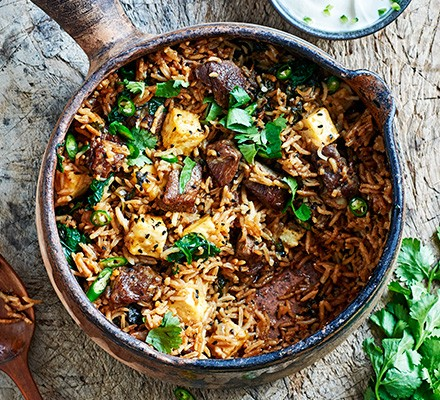

Lamb Biryani

Description
A nice dinner to have with the family. Experience the taste of India.
Ingredients
- 400g lamb neck, cut into small cubes
- 4 garlic cloves, grated
- 1 tbsp finely grated ginger
- 1 tbsp sunflower oil
- 1 large onion, chopped
- 1 tbsp cumin seeds
- 1 tbsp nigella seeds
- 1 tbsp Madras spice paste
- 200g basmati rice, rinsed well
- 8 curry leaves
- 400ml good-quality lamb or chicken stock
- 100g paneer, chopped
- 200g spinach, cooked and water squeezed out
- chopped corianeder
- sliced green chillies
- plain yogurt
Steps
- Toss the lamb in a bowl with the garlic, gigner and a large pinch of salt. Marinate in the fridge overnight or for at least a couple of hours.
- Heat the oil in a casserole. Fry the lamb for 5-10 mins until starting to brown
- Add the onion, cumin seeds and nigella seeds, and cook for 5 mins until starting to soften
- Stir in the curry paste, then cook for 1 min more.
- Scatter in the rice and curry leaves, then pour over the stock and bring to the boil. Meanwhile heat oven to 180C
- Stir in the paneer, spinach and some seasoning. Cover the dish with a tight lid of foil, then put the lid on to ensure it's well sealed
- Cook in the oven for 20 mins, then leave to stand, covered, for 10 mins.
- Bring the dish to the table, remove the lid and foil, scatter with coriander, chillies, and serve with yogurt on the side.